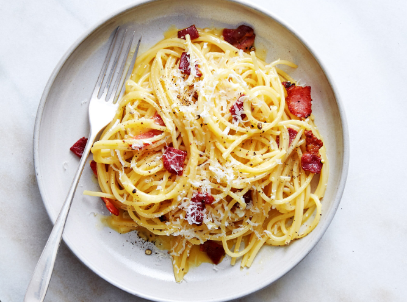
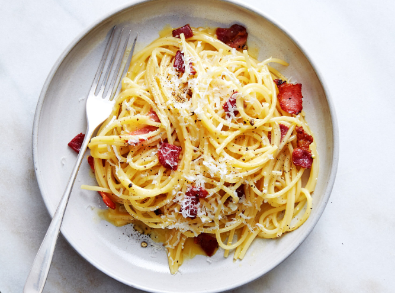

Roma, la eterna ciudad, es conocida no solo por su rica historia y monumentos impresionantes, sino también por su vibrante escena culinaria arraigada en la tradición italiana. La cocina romana se destaca por su simplicidad y la utilización de ingredientes frescos y de alta calidad. Platos emblemáticos como la Pasta Carbonara, Spaghetti alla Amatriciana y Saltimbocca alla Romana reflejan la esencia de la gastronomía local. El queso Pecorino Romano, el guanciale (tocino italiano) y las alcachofas son ingredientes destacados que aportan sabores auténticos a muchos platos. Las tradiciones culinarias en Roma incluyen la importancia de las comidas compartidas, la celebración de eventos con festines familiares y la preferencia por ingredientes locales de temporada. La ciudad también es famosa por sus trattorias acogedoras, donde los romanos y visitantes pueden deleitarse con la genuina hospitalidad italiana mientras disfrutan de una mezcla única de historia, cultura y sabores inolvidables. Video Youtube
 
